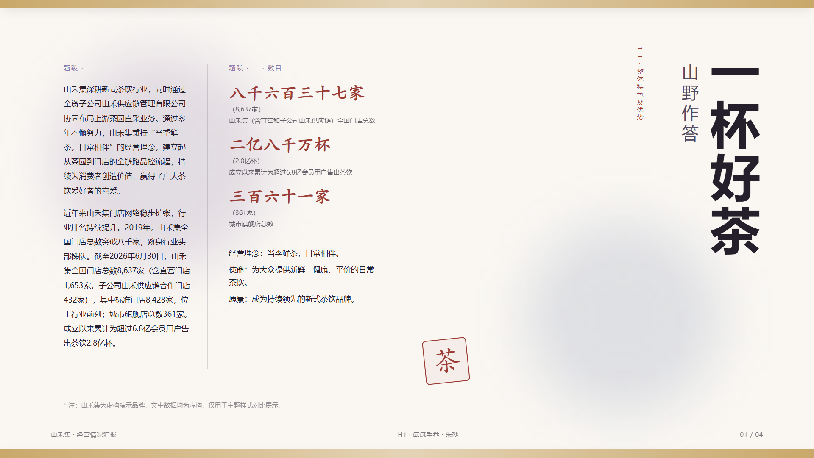
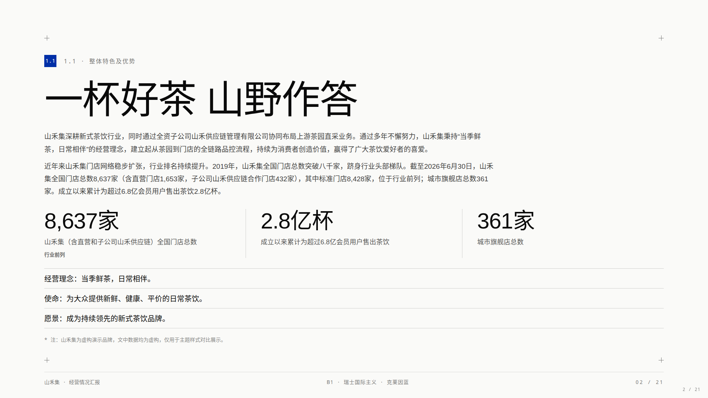
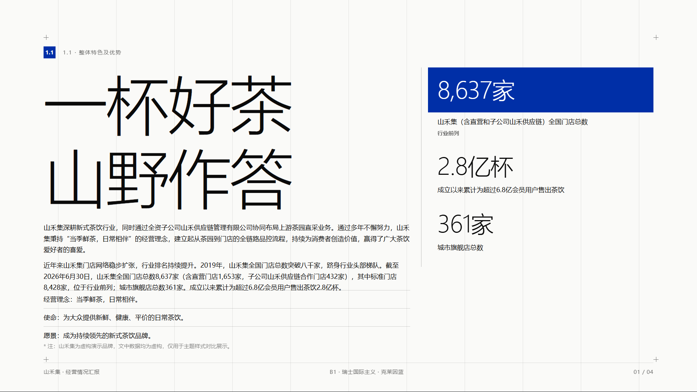
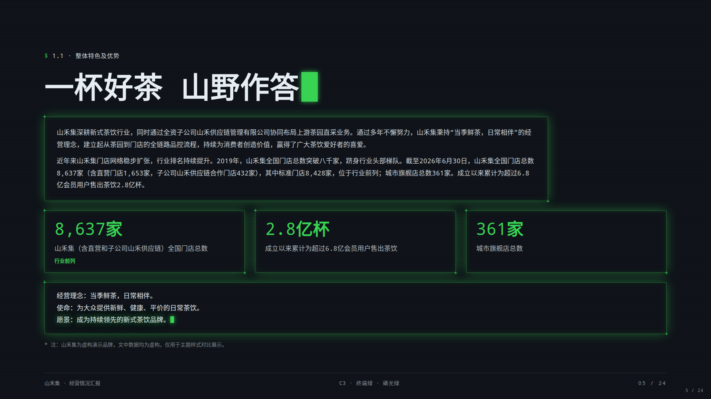
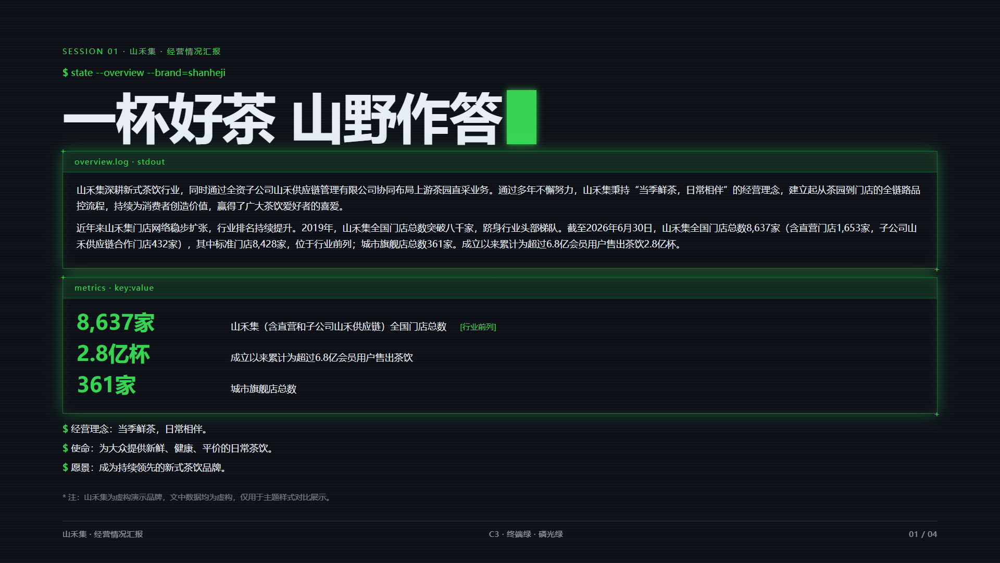
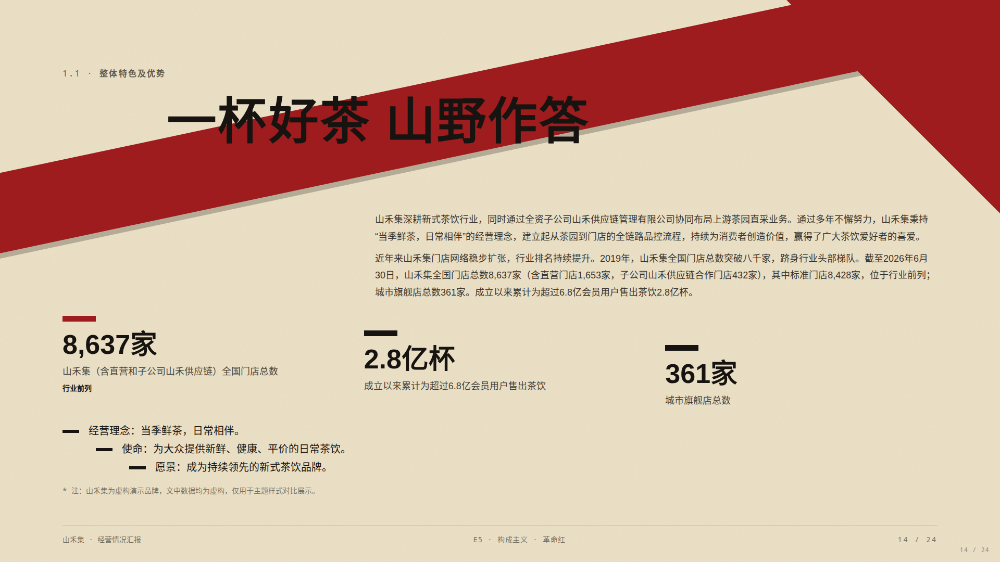
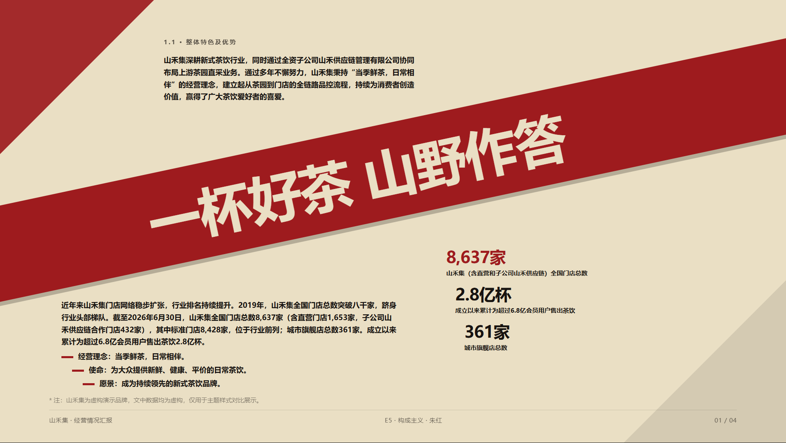

Gallery 现役 · E7 浮世绘 p16-e7.png新候选 · H1 氤氲手卷 G10 竖排题跋


两侧内容完全相同：山禾集「1.1 · 整体特色及优势」—— 同一标题、两段正文、三个门店数据、经营理念/使命/愿景、同一脚注。
左 = README 当前展示体系 assets/theme-sampler/（skeleton v7.4，逐页换 token）；右 = 新版 sampler（skeleton v7.6 角色类 + G10 signature_operator 重编译）。
H1 为新增主题，旧 sampler 无对应页，故与 Gallery 中同属「东方/文化」向的 E7 浮世绘对照。







.t-* 角色类决定（含 max() 下限），主题仅覆盖令牌；正文级不降透明度，避免灰化弱读。